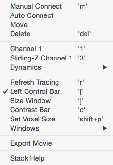

Stack


Overview
A stack window displays a 3D image stack, one image plane (slice) at a time.
- Use the mouse-wheel to scroll up and down through images, arrow keys to pan, +/- to zoom. Zooming with keyboard +/- follows the mouse pointer.
- Image contrast is critical, open the contrast control bar with keyboard ‘c’ and adjust min/max contrast with sliders. If contrast is not set properly you will not see objects in your image that are actually there.
- View a pixel intensity histogram with keyboard ‘h’.
- Right-click a stack for a contextual menu for most of the features described below.
- Closing a stack window does not remove it from memory (the stack remains open).
Annotating a stack
Make new 3D points with shift+click. All points are 3D, the z position of a point will be the current viewed image when the 3D point is created. See annotating a stack for details on creating and editing 3D points and lines. To easily manage a stack db, open the left stack db panel with keyboard ‘[’.
Voxel size
The x/y/z voxel size of each stack is set with keyboard ‘shift+p’. Setting the correct voxel size in µm is critical as MapManager performs many calculations in µm (NOT IN PIXELS). The voxel size must be set before annotations are created. Once annotations are created, you should not change the voxel size.
Scale bar
Each stack will display a white scale bar in µm. Control the length of the scale bar in Options.
Viewing multiple channels
Use keyboard ‘1’ and ‘2’ to switch between channels. Channels can also be selected using the right-click menu.
Contrast bar
The contrast bar is used to set the contrast of the images displayed in a stack window.
- Open the contrast bar with keyboard ‘c’ or use the right-click menu
- Pixel intensity values below ‘min’ will be displayed as black
- Pixel intensity values above ‘max’ will be displayed as white
Histogram

The histogram window show a histogram of pixel intensity values for each image in a stack.
- Open the histogram window with keyboard ‘h’ or use the right-click menu.
- The histogram window shows a pixel intensity histogram for one image.
- Scroll through the image in a stack (mouse-wheel) and the histogram for each image will be show.
Window Candy
- There are five different window decorations or candy options: (i) all, (ii) none, (iii) scale, (iv) scale + scroll, and (v) something else.
- Cycle different window candies with keyboard ‘shift+c’.
- Set the default window candy in Options.
- Note: The grid will only display when window candy is set to ‘All’ (when the stack axis are visible).
Making Z-Projections
Open a maximal Z-Projection with keyboard ‘z’ or use the right-click menu. This allows you to set the top and bottom slice that goes into the Z-Projection.
Once the Z-Projection window is open, it behaves just like a stack window (with only one slice). For example, you can zoom with +/-, pan with arrow keys, open the contrast bar with keyboard ‘c’, view a histogram with keyboard ‘h’, and copy/paste the image to another program, etc., etc.
Viewing a sliding z-projection
A sliding Z-Projection is a special stack where each image plane is replaced by a small maximal Z-Projection showing slices just above and below the image plane you are viewing.
You can switch to a sliding Z-Projection just like you can switch channels. Switch to a sliding Z-Projection for channel 1 with keyboard ‘3’ and for channel 2 with keyboard ‘4’. You can also use the right-click menu to switch to the sliding z-projection view.
Switch to the sliding z-projection with shift+3 or shift+4 to set the number of slices in each projection in the sliding z-projection.
Navigation window

The navigation window opens a new window with a maximal z-projection of the stack and shows the current zoomed view as a blue square.
- Right click and select ‘Navigation Window’ menu. A navigation window will be opened and your current zoomed view of the stack will be shown as a blue square.
- Zoom with +/- or pan with arrow keys and the blue-square tracks what you are looking at.
- The navigation window is, by default, a maximal z-projection of the entire stack.
Zoom window
Right click and select ‘Zoom Window’. The zoom window will follow the mouse pointer and show a zoomed in region of the current image.
Point info

The Point Info window shows information about the currently selected object.
- Open the Point Info window from any stack window using keyboard ‘i’.
- Use the point info window to annotate objects with text notes.
Right click

Right-click on the image and you will get a contextual menu to activate the features described on this page.
Copy/Paste into other programs
Igor Pro is very good at copying image data to the clipboard so it can be pasted into other programs. From a stack window, copying will copy the image with all the annotations, it does not copy the contrast (top) and scoring (left) toolbars. The scoring can be hidden by double-clicking the image, selecting all the Traces and clicking the ‘Hide Trace’ checkbox.
Keyboard commands
Map Manager makes heavy use of keyboard shortcuts. Use the right click menu to see the mapping between the function and the key. Here is a list of keyboard shortcuts. In a stack window, use keyboard ‘shift+h’ to print this table.
| Topic | Keyboard | Action |
|---|---|---|
| Navigation | ||
| arrow-keys | Pan image | |
| +/- | Zoom image | |
| Enter | Full zoom image | |
| ] | Toggle between 2 different window sizes | |
| Image Display | ||
| 1 | Channel 1 | |
| 2 | Channel 2 | |
| 3 | Sliding Z-Project - Channel 1 | |
| 4 | Sliding Z-Project - Channel 2 | |
| Toolbars | ||
| c | Toggle contrast toolbar (top) | |
| [ | Toggle scoring toolbar (left) | |
| New Windows | ||
| h | Histogram | |
| z | Maximal Z-Projection | |
| shift+z | Maximal Z-Projection - Options | |
| i | Object info panel | |
| shift+i | Stack info panel | |
| Voxel Size | ||
| shift+p | Set voxel size | |
| Other | ||
| / | Start and stop movie of slices | |
| shift+c | Toggle 4 different window candy options | |
| shift+h | Print this help | |
| Object Scoring | ||
| b | Toggle selected object bad | |
| control + left arrow | Go to previous object | |
| control + right arrow | Go to next object | |
| Map Run | ||
| l | Link window (lower case ‘l’ as in link) | |
| a | Make selected object addition | |
| s | Make selected object subtraction | |
| p | Make selected object persistent |